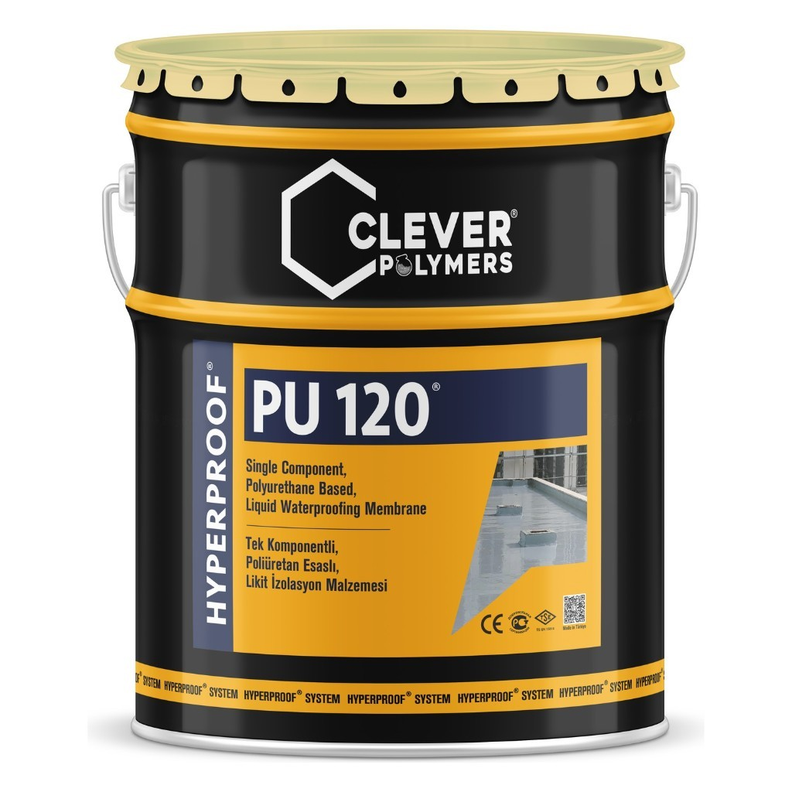

Подходит
- Террасы, веранды и балконы
- Влажные помещения под плитку: ванные и кухни
- Защищённые кровельные системы
- Оросительные каналы
- Битумные рулонные материалы
- Гипсокартонные и цементные плиты
- Внутри и снаружи

Эластичная бесшовная гидроизоляция для террас, балконов, влажных помещений под плитку и защищённых кровель.
189 €с НДС
Символы опасности, сигнальное слово, H/P-фразы и EUH добавим по паспорту безопасности (SDS ЕС на словацком). Этого паспорта у нас пока нет.
С 24 августа 2023 года перед промышленным или профессиональным применением требуется соответствующее обучение.
Порядок работ по техническому листу производителя, февраль 2026.
Температура нанесения от +5 до +35 °C, относительная влажность меньше 85 %. Начальное отверждение 6 часов при 25 °C и 55 % отн. влажности. Инструмент очищайте CLEVER 001.
PU PRIMER 200, ClvSeal EP PRIMER 617, ClvSeal EP PRIMER 625 или PRIMER T в зависимости от основания.
Clever PU 120, минимум 2 слоя. Эта карточка.
PU 650 TC-1K или PU 600 TC-1K, растворитель CLEVER 001, валики и миксер.
По техническому листу, февраль 2026.
| Тип | Однокомпонентный полиуретан |
|---|---|
| Плотность (+20 °C) | 1,45 ± 0,05 g/cm³ |
| Вязкость (+25 °C) | 3000-6000 cP |
| Сухой остаток | 85 % (±5) |
| Твёрдость | 65 Shore A |
| Удлинение при разрыве | > 400 % |
| Прочность на растяжение | > 5 N/mm² |
| Адгезия к бетону | > 2 N/mm² |
| Паропроницаемость | 0,8 г/м²·ч |
| УФ-тест QUV (ASTM G53) | 2000 ч: соответствует |
| Термостойкость | 100 дней при +80 °C |
| Рабочая температура | от −30 до +90 °C |
| Следующий слой | через 6-24 ч |
| Цвет | Серый |
| Хранение | 12 месяцев в закрытой упаковке при +5...+30 °C |
| Реакция на огонь | класс E |
| Содержание ЛОС (VOC) | Добавим |
Условия доставки и возврата для этого товара ещё не добавлены.
Общие тексты магазина на страницах Доставка и оплата и Возврат и обмен. Это не отдельные условия для этого ведра.
Для открытых и эксплуатируемых поверхностей производитель предписывает верхний слой PU 650 TC-1K или PU 600 TC-1K.
Минимум 2. Второй слой через 6-24 часа.
Примерно 12-15 кг при расходе 1,20-1,50 кг/м².
У PU 110 есть ETA (W3, 25 лет), она подходит также для открытых кровель. PU 120 для террас, балконов, влажных помещений и защищённых кровель. Карточка Clever PU 110.
Пиктограммы, сигнальное слово, H/P-фразы, EUH и UFI добавим по паспорту безопасности (SDS ЕС на словацком). Этого паспорта у нас пока нет, поэтому здесь их не указываем.
С 24 августа 2023 года перед промышленным или профессиональным применением требуется соответствующее обучение.
По техническому листу: используйте в хорошо проветриваемых помещениях, вдали от открытого огня, не курите. При работе надевайте защитные перчатки, очки и респиратор. При попадании в глаза промойте большим количеством воды.
Производитель: CLEVER POLYMERS YAPI KİMYASALLARI A.Ş., Köseler Mah. 34. Cad. No:5, 41455 Dilovası / Kocaeli, Турция, info@cleverpolymers.com
Ответственное лицо в ЕС / импортёр: ART STAV s. r. o., Jarabinková 6B, 821 09 Bratislava, IČO: 57915946, e-mail: info@art-stav.sk.
Идентификатор продукта: Clever PU 120. Номер партии на упаковке. Код продукта добавим.
Декларацию о характеристиках (DoP) предоставим по запросу и приложим к товару.
Документы